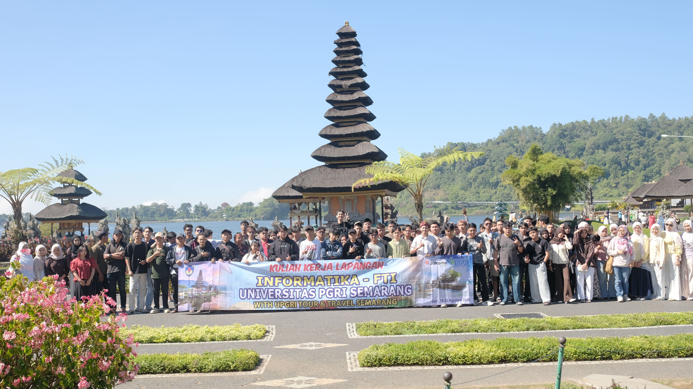
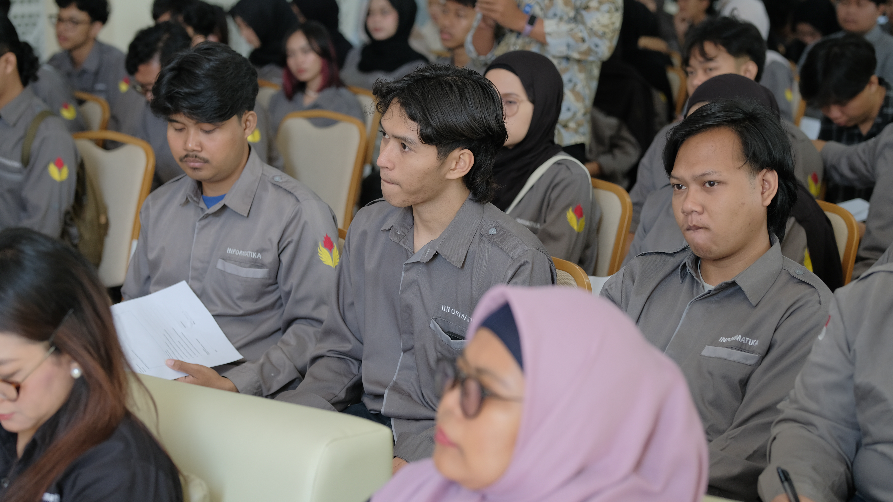
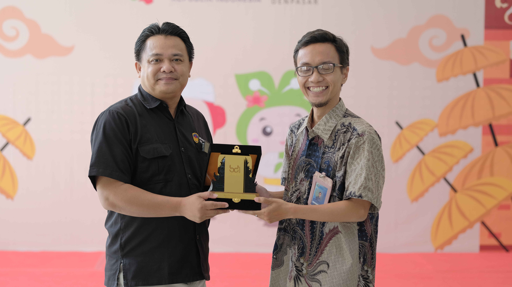
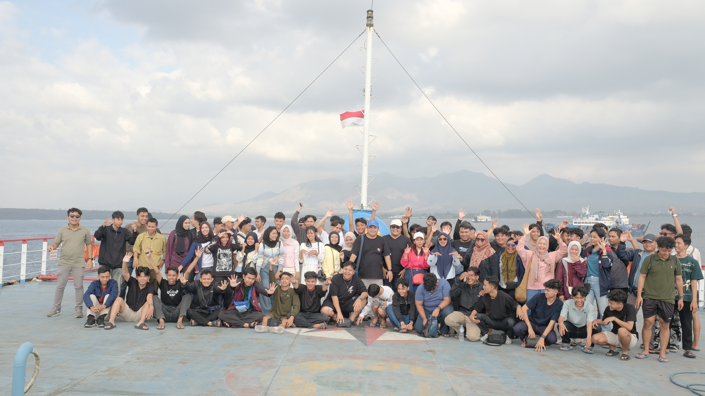
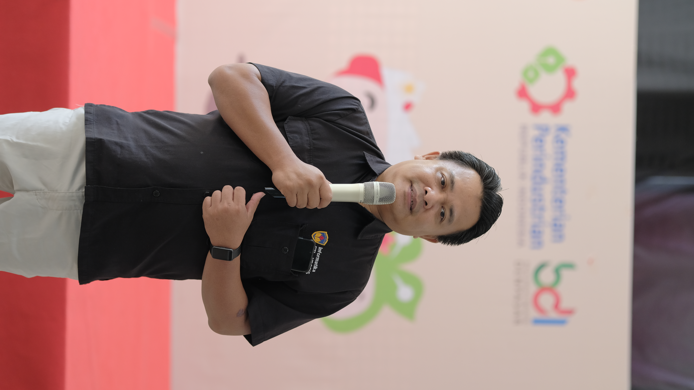
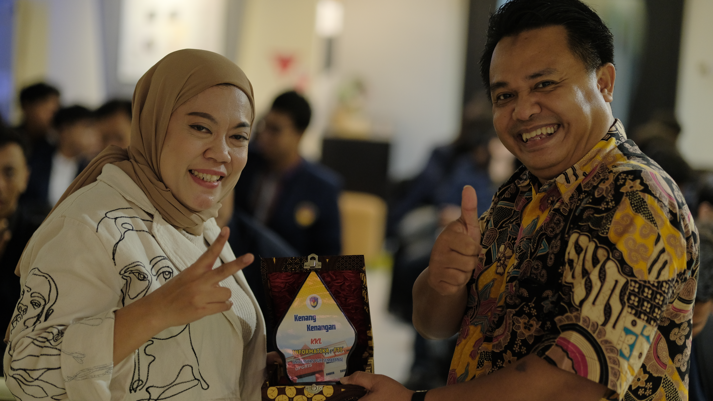
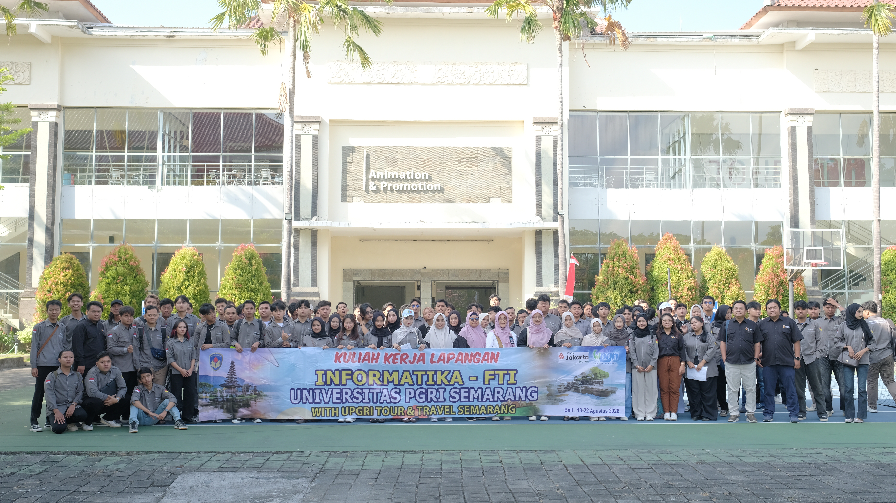
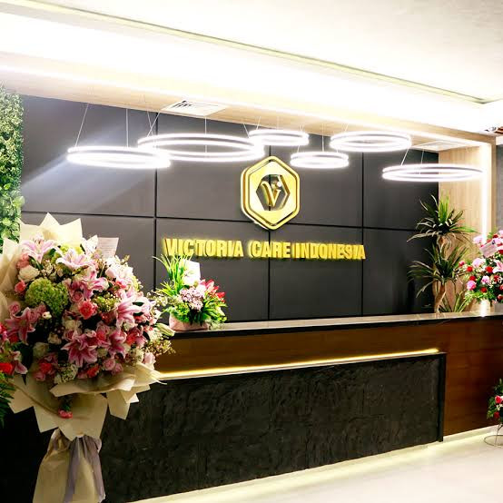
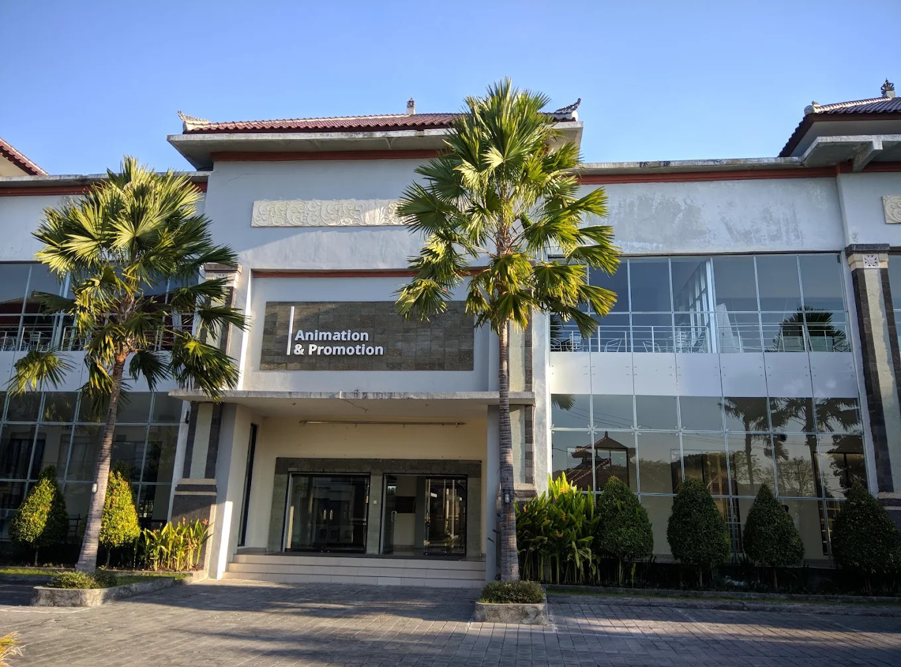

Galeri Kegiatan
Dokumentasi selama observasi lapangan, pelatihan, dan eksplorasi budaya di Bali.








Menghubungkan pengetahuan teoritis dengan pengamatan langsung di industri manufaktur, lembaga pelatihan, serta sektor pariwisata di Bali.
Pengamatan ekosistem kerja, otomatisasi, dan pengembangan SDM digital.

Kunjungan ini memberikan pengalaman mengenai proses industri produk kosmetik serta perawatan tubuh dan rambut, seperti Herborist dan CBD.
Dari sudut pandang Informatika, pengamatan difokuskan pada penggunaan aplikasi Inject, komputer operasional, dan mesin pengolahan air limbah yang membuktikan peran teknologi dalam mendukung riset, produksi, pengemasan, hingga pengelolaan lingkungan perusahaan.

Kunjungan ini memberikan pengalaman praktik langsung pengolahan foto menggunakan aplikasi Adobe Lightroom untuk mengatur pencahayaan, warna, dan kontras visual.
Kegiatan ini menekankan bahwa Informatika juga mencakup pengolahan media digital untuk dokumentasi dan promosi. Selain itu, mahasiswa belajar bahwa kompetensi profesional membutuhkan kemampuan beradaptasi dan belajar secara berkelanjutan.
Tinjauan dari aspek sistem informasi, pelayanan digital, dan pengelolaan data pada sektor ritel serta wisata.
Lokasi: Joger Luwus, Dewata, Krisna, dan Karang Kurnia.
Pengamatan difokuskan pada penggunaan teknologi untuk mendukung pengelolaan data produk, transaksi, persediaan, dan media digital dalam promosi identitas usaha.
Lokasi: Ulun Danu Beratan, Pantai Kuta, dan Pantai Pandawa.
Destinasi wisata memerlukan penyediaan informasi digital mengenai akses, fasilitas, serta pemanfaatan media digital untuk mendukung pengelolaan dan promosi pariwisata secara efektif.
Lokasi: Devdan Show dan Tari Kecak.
Sektor pertunjukan juga membutuhkan pengelolaan informasi digital, tata cahaya teknis, promosi interaktif, serta pelayanan terpadu bagi penonton dan wisatawan.
Berdasarkan materi pelatihan di BDI Denpasar, pengamatan di berbagai destinasi diklasifikasikan menggunakan tahapan Design Thinking.
| Tahapan | Lokasi Berkaitan | Pembelajaran yang Diperoleh |
|---|---|---|
| Empathize | BDI Denpasar, Pantai Kuta, Pantai Pandawa | Memahami kebutuhan peserta dan wisatawan terhadap layanan serta pengalaman yang diberikan. |
| Define | PT Victoria Care, Dewata, Krisna, Karang Kurnia | Mengenali kebutuhan kegiatan produksi, penyediaan produk, dan pelayanan konsumen. |
| Ideate | BDI Denpasar, Joger Luwus, Devdan Show | Memahami pentingnya kreativitas dalam menghasilkan konten visual dan produk menarik. |
| Prototype | PT Victoria Care Indonesia, BDI Denpasar | Menghubungkan tahapan pengembangan produk dan praktik pengolahan hasil karya visual. |
| Test | PT Victoria Care, Pusat Oleh-oleh, Jimbaran | Mengevaluasi hasil produk akhir, kualitas pelayanan, dan kepuasan pengunjung di akhir agenda. |
Dokumentasi selama observasi lapangan, pelatihan, dan eksplorasi budaya di Bali.






Pemahaman dan pengalaman baru yang didapatkan selama pelaksanaan Kuliah Kerja Lapangan.
Kunjungan industri dan pelatihan memberikan pemahaman nyata bahwa perangkat lunak dan sistem informasi sangat krusial dalam membantu operasional industri serta pengolahan media digital.
Pengamatan di pusat oleh-oleh dan destinasi wisata memperlihatkan pentingnya kreativitas dalam menghasilkan produk maupun memberikan pengalaman interaktif kepada pengunjung.
Kegiatan lapangan ini melatih komunikasi, kerja sama tim, kemampuan adaptasi dengan lingkungan baru, serta kemampuan mengamati permasalahan langsung dari sumbernya.
Eksplorasi destinasi menambah wawasan akan kekayaan alam dan budaya yang harus dijaga, serta menunjukkan bahwa pelestarian budaya dapat berjalan berdampingan dengan pariwisata digital.